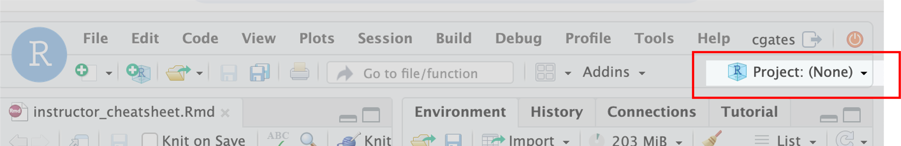

Following login to R/Studio confirm that R/Studio is set to the ISC_R project. If it shows Project: (None), you can either:

# =========================================================================
# Day 2 set up
# =========================================================================
# -------------------------------------------------------------------------
# Set working directory
# Confirm you are in the right working directory; should be ~/ISC_R
getwd()
# Reset if necessary
setwd("~/ISC_R")
# -------------------------------------------------------------------------
# Load libraries
library(Seurat)
library(BPCells)
library(tidyverse)
options(future.globals.maxSize = 1e9)
# Load data ---------------------------------------------------
geo_so = readRDS('~/ISC_R/inputs/prepared_data/geo_so_sct_normalized.rds')
# Alternatively, this starts from the data you saved yesterday
#geo_so = readRDS('~/ISC_R/results/rdata/geo_so_filtered.rds')
#geo_so = readRDS('~/ISC_R/results/rdata/geo_so_sct_normalized.rds')Following login to R/Studio confirm that R/Studio is set to the ISC_R project. If it shows Project: (None), you can either;
#### Day 3 setup -----------------
# Confirm you are in the right working directory
# Should be ~/ISC_R
getwd()
# Reset if necessary
setwd("~/ISC_R")
# Load libraries ----------------------------------------------
library(Seurat)
library(BPCells)
library(tidyverse)
options(future.globals.maxSize = 1e9)
pcs = 13
# Load data ---------------------------------------------------
# This starts from the data you saved yesterday
geo_so = readRDS('~/ISC_R/results/rdata/geo_so_sct_clustered.rds')
# load data --------
# read in Dana's output file from yesterday so we are all starting with the same data
geo_so = readRDS('/home/workshop/damki/ISC_R/results/rdata/geo_so_sct_clustered.rds')
#### setup end --------------------# ==============================================================
# Leiden clustering is an alternative to Louvain clustering ----
# Note that these code blocks are specific to the workshop
# compute environent. A different install would need some
# customization.
# Setup python dependencies (leidenalg is implemented in python)
library(reticulate)
options(reticulate.conda_binary = "/efs/workshop/conda/base/condabin/conda")
use_condaenv('/efs/workshop/conda/isc1.1')
py_config()
# Cluster PCAs ------------------------------------------------------------
# Create KNN graph with `FindNeighbors()`
geo_so = FindNeighbors(geo_so, dims = 1:pcs, reduction = 'integrated.sct.rpca')
# generate clusters
# algorithm 4 = Leiden; using method igraph to reduces memory footprint and speed things up
geo_so = FindClusters(geo_so,
resolution = 0.4,
cluster.name = 'integrated.sct.rpca.clusters',
algorithm = 4,
method="igraph")
# look at meta.data to see cluster labels
head(geo_so@meta.data)